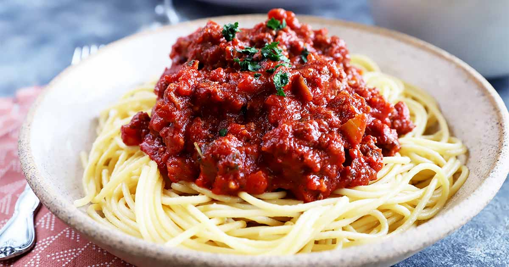

Spaghetti

Spaghetti (Italian: [spa'getti]) is a long, thin, solid, cylindrical pasta. It is a staple food of traditional Italian cuisine. Like other pasta, spaghetti is made of milled wheat, water, and sometimes enriched with vitamins and minerals. Italian spaghetti is typically made from durum-wheat semolina. Usually the pasta is white because refined flour is used, but whole wheat flour may be added. Spaghettoni is a thicker form of spaghetti, while spaghettini is a thinner form. Capellini is a very thin spaghetti, sometimes known colloquially as "angel hair pasta", while Vermicelli refers to intermediate widths, varying between the United States and Italy.
Ingredients
- 2 lbs. Spaghetti noodles
- 1 lb.ground pork
- 6 ounces lunncheon meat minced
- 4 piecee hotdogs or beef franks
- 35 ounces Filipino Style Spaghetti Sauce
- 1/2 cup shredded cheddar chesse
- 1 1/2 cups beef broth
- 1 medium onion minced
- 1 teaspoon minced garlic
- Salt and pepper to taste
- 3 tablespoons cooking oil
Steps
- Cook the Spaghetti noodles according to package instructions. Once cooked, transfer to a bowl. Set aside.
- Heat the oil i a Pan
- Saute the onion and garlic
- Once the onions becomes soft, add the ground pork. Cook until the color turns light brown.
- Add the luncheon meat and hotdog. Stir and cook for 2 to 3 minutes.
- Pour-in the Spaghetti sauce and beef broth. Stir and let boil. Cover and simmer for 30 minutes.
- Try to taste the sauce and add salt and pepper if needed.
- Pour the Filipino Style Spaghetti sauce over the Spaghetti. Top with shredded cheese.
- Serve.Share and enjoy!